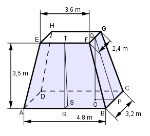

Aufgabe 267 Wie groß sind das Dachvolumen V und die mit Schindeln zu deckende Dachfläche A?

V = m3 35 V = ---- + (4,8 * 3,2 * 3 * 3,5 V = ----- * (15,36 + 11,52 + 8,64) m3 = 41,4 m3 3 Gesucht ist die blaue Mantelfläche: Satz von Pythagoras im Dreieck OPQ: AB - EF 4,8 m - 3,6 m OB = --------- = ---------------- = 0,6 m 2 2 OQ = h = 3,5 m PQ2 = OQ2 + OB2 = 3,52 m2 + 0,62 m2 = 12,61 m2 |√ PQ = 3,55 m = Höhe der Seitenfläche BCGF Satz von Pythagoras im Dreieck RST: BC - FG 3,2 m - 2,4 m RS = ---------- = ---------------- = 0,4 m 2 2 ST = h = 3,5 m RT2 = ST2 + RS2 = 3,52 m2 + 0,42 m2 = 12,41 m2 |√ RT = 3,52 m = Höhe der Seitenfläche ABEF: AB + EF BC + FG A = 2 * ---------- * RT + 2 * ----------- * OQ 2 2 A = (4,8 + 3,6) * 3,52 + (3,2 + 2,4) * 3,55 m2 = 49,45 m2